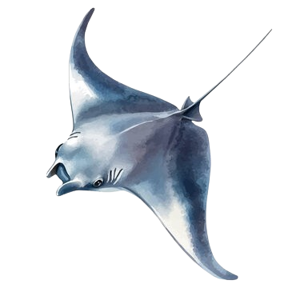

OceanRithm – Conceptual Research Portal¶
OceanRithm is a research-driven framework focused on advancing secure workflow governance, multi-tenant abstraction models, and orchestration theory within modern DevSecOps ecosystems.

This portal presents an academically aligned, high-level overview of the conceptual foundations behind OceanRithm, designed for:
Academic evaluation Peer review and publication processes Research supervision Strategic architectural assessment
OceanRithm deliberately abstracts away implementation, deployment, and infrastructure-specific details to preserve conceptual clarity and research integrity.
The emphasis is on principles, governance, identity boundaries, and secure orchestration logic.
Scope of the Documentation¶
-
Background & Motivation
A structured exploration of the challenges and gaps in current secure multi-tenant CI/CD ecosystems.
-
Conceptual Architecture
A layered representation of identity governance, token boundaries, and orchestration lifecycle abstractions.
-
Design Principles
Security invariants, theoretical constraints, and core architectural assumptions guiding OceanRithm.
-
Functional & Non-Functional Perspectives
High-level functional roles and conceptual non-functional constraints shaping the model.
-
Workflow-Level Models
Illustrative credential flow diagrams, boundary definitions, and governance pathways.
-
Use Cases
Abstract scenarios demonstrating how OceanRithm concepts apply to multi-tenant DevSecOps environments.
-
Limitations & Future Research
Documented conceptual boundaries and proposed research extensions.
Important Notice¶
This documentation is conceptual and research-focused.
It does not include source code, deployment procedures, operational workflows, or proprietary implementation details.
The OceanRithm conceptual framework is the intellectual work of:
OceanRithm Solutions UG (haftungsbeschränkt)
Berlin, Germany
and is provided exclusively for academic, evaluative, and exploratory purposes.
For additional meta-information:
About
Disclaimer